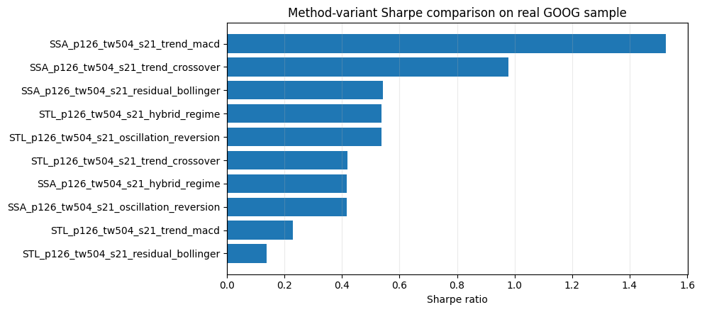

Strategy Expansion 03 - Method-specific strategy variants
Executed tutorial notebook. This page is generated from
examples/notebooks/quant_trading/03_detime_method_specific_strategy_variants.ipynb and includes markdown cells, code cells, stdout, tables, and captured figures from the committed notebook.
Tutorial Navigation
| Track | Tutorial notebook |
|---|---|
| Roadmap | Tutorial 00 - Roadmap |
| Strategy Lab | 01 Trend-Following Lab |
| Tutorial Sequence | 01 Real Market Data and Feature Factory |
| Tutorial Sequence | 02 Decomposition-aware MA and MACD |
| Strategy Lab | 02 Oscillation-Reversion Lab |
| Strategy Expansion | 03 Method-Specific Variants |
| Tutorial Sequence | 03 Residual Mean Reversion |
| Strategy Expansion | 04 Component Pair Trading |
| Tutorial Sequence | 04 Donchian Breakout |
| Tutorial Sequence | 05 Pair-Spread Stat-Arb |
| Tutorial Sequence | 06 Cross-Sectional Rotation |
| Native SSA Replay | 07 Native SSA High-Return / Low-Drawdown |
Executed Notebook
This notebook shows the core tutorial point: different decomposition methods and windows create different strategies because they produce different trend, cycle, and residual components. The trading rule is held mostly fixed; the decomposition front-end changes the signal.
Strategy map
The notebook runs five decomposition-based strategy families:
- trend following from decomposed trend;
- oscillation reversion from residual z-score;
- residual Bollinger bands around trend + cycle fair value;
- MACD computed on the decomposed trend;
- dual-EMA crossover computed on the decomposed trend.
Each method/period/window combination is treated as one strategy variant.
In [1]
import matplotlib.pyplot as plt
from quant_trading.data import load_sample_goog_ohlcv
from quant_trading.strategy_lab import execution_price_panel
from quant_trading.strategy_method_variants import (
DecompositionVariantSpec,
collect_orders_and_trades,
run_method_variant_grid,
)
In [2]
ohlcv = load_sample_goog_ohlcv(trim_start='2014-01-01')
symbol = 'GOOG'
close = ohlcv['Close'].rename(symbol).to_frame()
volume = ohlcv['Volume'].rename(symbol).to_frame()
execution_prices = execution_price_panel(ohlcv, field='Open', next_bar=True)
execution_prices.columns = [symbol]
close.tail()
text/html
| GOOG | |
|---|---|
| Date | |
| 2017-12-26 | 1056.739990 |
| 2017-12-27 | 1049.369995 |
| 2017-12-28 | 1048.140015 |
| 2017-12-29 | 1046.400024 |
| 2018-01-02 | 1065.000000 |
Build a compact method grid
The grid below is intentionally small for a notebook. A full research run can add periods 63/126/252, shorter steps, and optional Wavelet/EMD/VMD variants. The default grid avoids very short periods so the extracted components read as market structure rather than one-month noise.
In [3]
specs = [
DecompositionVariantSpec('STL', period=126, train_window=504, step=21, z_window=63, role='fixed_period_half_year_cycle'),
DecompositionVariantSpec('SSA', period=126, train_window=504, step=21, z_window=63, role='subspace_half_year_cycle'),
DecompositionVariantSpec('STD', period=126, train_window=504, step=21, z_window=63, role='dispersion_half_year_cycle'),
]
stats, results, spec_table, coverage, failed = run_method_variant_grid(
close,
volume,
specs=specs,
execution_prices=execution_prices,
allow_short_trend=False,
allow_short_reversion=True,
)
stats.head(20)
text/html
| strategy | strategy_family | decomposition_variant | total_return | cagr | sharpe | max_drawdown | calmar | volatility | hit_rate | ... | periods_per_year | execution_model | spec_method | spec_period | spec_train_window | spec_step | spec_z_window | spec_label | spec_role | spec_name | |
|---|---|---|---|---|---|---|---|---|---|---|---|---|---|---|---|---|---|---|---|---|---|
| 0 | detime_SSA_p126_tw504_s21_trend_macd | trend_macd | SSA_p126_tw504_s21 | 0.365531 | 0.080999 | 1.525011 | -0.052530 | 1.541967 | 0.051964 | 0.088294 | ... | 252.0 | signal_on_bar_t_fill_next_bar_open_or_proxy | SSA | 126 | 504 | 21 | 63 | None | subspace_half_year_cycle | SSA_p126_tw504_s21 |
| 1 | detime_SSA_p126_tw504_s21_trend_crossover | trend_crossover | SSA_p126_tw504_s21 | 0.347427 | 0.077398 | 0.978572 | -0.084043 | 0.920942 | 0.079416 | 0.152778 | ... | 252.0 | signal_on_bar_t_fill_next_bar_open_or_proxy | SSA | 126 | 504 | 21 | 63 | None | subspace_half_year_cycle | SSA_p126_tw504_s21 |
| 2 | detime_SSA_p126_tw504_s21_residual_bollinger | residual_bollinger | SSA_p126_tw504_s21 | 0.120124 | 0.028766 | 0.542894 | -0.071692 | 0.401241 | 0.055008 | 0.053571 | ... | 252.0 | signal_on_bar_t_fill_next_bar_open_or_proxy | SSA | 126 | 504 | 21 | 63 | None | subspace_half_year_cycle | SSA_p126_tw504_s21 |
| 3 | detime_STL_p126_tw504_s21_hybrid_regime | hybrid_regime | STL_p126_tw504_s21 | 0.051462 | 0.012624 | 0.537848 | -0.025492 | 0.495222 | 0.023848 | 0.009921 | ... | 252.0 | signal_on_bar_t_fill_next_bar_open_or_proxy | STL | 126 | 504 | 21 | 63 | None | fixed_period_half_year_cycle | STL_p126_tw504_s21 |
| 4 | detime_STL_p126_tw504_s21_oscillation_reversion | oscillation_reversion | STL_p126_tw504_s21 | 0.051462 | 0.012624 | 0.537848 | -0.025492 | 0.495222 | 0.023848 | 0.009921 | ... | 252.0 | signal_on_bar_t_fill_next_bar_open_or_proxy | STL | 126 | 504 | 21 | 63 | None | fixed_period_half_year_cycle | STL_p126_tw504_s21 |
| 5 | detime_STL_p126_tw504_s21_trend_crossover | trend_crossover | STL_p126_tw504_s21 | 0.173953 | 0.040909 | 0.419117 | -0.133557 | 0.306303 | 0.110303 | 0.193452 | ... | 252.0 | signal_on_bar_t_fill_next_bar_open_or_proxy | STL | 126 | 504 | 21 | 63 | None | fixed_period_half_year_cycle | STL_p126_tw504_s21 |
| 6 | detime_SSA_p126_tw504_s21_oscillation_reversion | oscillation_reversion | SSA_p126_tw504_s21 | 0.020514 | 0.005090 | 0.415414 | -0.017531 | 0.290325 | 0.012406 | 0.008929 | ... | 252.0 | signal_on_bar_t_fill_next_bar_open_or_proxy | SSA | 126 | 504 | 21 | 63 | None | subspace_half_year_cycle | SSA_p126_tw504_s21 |
| 7 | detime_SSA_p126_tw504_s21_hybrid_regime | hybrid_regime | SSA_p126_tw504_s21 | 0.020514 | 0.005090 | 0.415414 | -0.017531 | 0.290325 | 0.012406 | 0.008929 | ... | 252.0 | signal_on_bar_t_fill_next_bar_open_or_proxy | SSA | 126 | 504 | 21 | 63 | None | subspace_half_year_cycle | SSA_p126_tw504_s21 |
| 8 | detime_STL_p126_tw504_s21_trend_macd | trend_macd | STL_p126_tw504_s21 | 0.056238 | 0.013772 | 0.228508 | -0.152319 | 0.090418 | 0.071101 | 0.062500 | ... | 252.0 | signal_on_bar_t_fill_next_bar_open_or_proxy | STL | 126 | 504 | 21 | 63 | None | fixed_period_half_year_cycle | STL_p126_tw504_s21 |
| 9 | detime_STL_p126_tw504_s21_residual_bollinger | residual_bollinger | STL_p126_tw504_s21 | 0.019034 | 0.004725 | 0.137965 | -0.065186 | 0.072482 | 0.039841 | 0.015873 | ... | 252.0 | signal_on_bar_t_fill_next_bar_open_or_proxy | STL | 126 | 504 | 21 | 63 | None | fixed_period_half_year_cycle | STL_p126_tw504_s21 |
| 10 | detime_STD_p126_tw504_s21_hybrid_regime | hybrid_regime | STD_p126_tw504_s21 | 0.000000 | 0.000000 | 0.000000 | 0.000000 | NaN | 0.000000 | 0.000000 | ... | 252.0 | signal_on_bar_t_fill_next_bar_open_or_proxy | STD | 126 | 504 | 21 | 63 | None | dispersion_half_year_cycle | STD_p126_tw504_s21 |
| 11 | detime_STD_p126_tw504_s21_trend_macd | trend_macd | STD_p126_tw504_s21 | 0.000000 | 0.000000 | 0.000000 | 0.000000 | NaN | 0.000000 | 0.000000 | ... | 252.0 | signal_on_bar_t_fill_next_bar_open_or_proxy | STD | 126 | 504 | 21 | 63 | None | dispersion_half_year_cycle | STD_p126_tw504_s21 |
| 12 | detime_STD_p126_tw504_s21_residual_bollinger | residual_bollinger | STD_p126_tw504_s21 | 0.000000 | 0.000000 | 0.000000 | 0.000000 | NaN | 0.000000 | 0.000000 | ... | 252.0 | signal_on_bar_t_fill_next_bar_open_or_proxy | STD | 126 | 504 | 21 | 63 | None | dispersion_half_year_cycle | STD_p126_tw504_s21 |
| 13 | detime_STL_p126_tw504_s21_trend_following | trend_following | STL_p126_tw504_s21 | 0.000000 | 0.000000 | 0.000000 | 0.000000 | NaN | 0.000000 | 0.000000 | ... | 252.0 | signal_on_bar_t_fill_next_bar_open_or_proxy | STL | 126 | 504 | 21 | 63 | None | fixed_period_half_year_cycle | STL_p126_tw504_s21 |
| 14 | detime_STD_p126_tw504_s21_oscillation_reversion | oscillation_reversion | STD_p126_tw504_s21 | 0.000000 | 0.000000 | 0.000000 | 0.000000 | NaN | 0.000000 | 0.000000 | ... | 252.0 | signal_on_bar_t_fill_next_bar_open_or_proxy | STD | 126 | 504 | 21 | 63 | None | dispersion_half_year_cycle | STD_p126_tw504_s21 |
| 15 | detime_STD_p126_tw504_s21_trend_following | trend_following | STD_p126_tw504_s21 | 0.000000 | 0.000000 | 0.000000 | 0.000000 | NaN | 0.000000 | 0.000000 | ... | 252.0 | signal_on_bar_t_fill_next_bar_open_or_proxy | STD | 126 | 504 | 21 | 63 | None | dispersion_half_year_cycle | STD_p126_tw504_s21 |
| 16 | detime_SSA_p126_tw504_s21_trend_following | trend_following | SSA_p126_tw504_s21 | 0.000000 | 0.000000 | 0.000000 | 0.000000 | NaN | 0.000000 | 0.000000 | ... | 252.0 | signal_on_bar_t_fill_next_bar_open_or_proxy | SSA | 126 | 504 | 21 | 63 | None | subspace_half_year_cycle | SSA_p126_tw504_s21 |
| 17 | detime_STD_p126_tw504_s21_trend_crossover | trend_crossover | STD_p126_tw504_s21 | 0.000000 | 0.000000 | 0.000000 | 0.000000 | NaN | 0.000000 | 0.000000 | ... | 252.0 | signal_on_bar_t_fill_next_bar_open_or_proxy | STD | 126 | 504 | 21 | 63 | None | dispersion_half_year_cycle | STD_p126_tw504_s21 |
18 rows × 29 columns
In [4]
plot_stats = stats.sort_values("sharpe", ascending=True).tail(10).copy()
labels = plot_stats["strategy"].astype(str).str.replace("detime_", "", regex=False)
fig, ax = plt.subplots(figsize=(10, 4.5))
ax.barh(labels, plot_stats["sharpe"])
ax.axvline(0, color="black", linewidth=0.8)
ax.set_xlabel("Sharpe ratio")
ax.set_title("Method-variant Sharpe comparison on real GOOG sample")
ax.grid(True, axis="x", alpha=0.25)
plt.tight_layout()
plt.show()
image/png

In [5]
orders, trades = collect_orders_and_trades(results)
print('orders:', len(orders))
print('round-trip trades:', len(trades))
trades.head()
stdout
orders: 67
round-trip trades: 32
text/html
| strategy | asset | side | entry_signal_date | entry_fill_date | exit_signal_date | exit_fill_date | entry_price | exit_price | bars_held | entry_weight | directional_return | approx_weighted_return_after_cost | |
|---|---|---|---|---|---|---|---|---|---|---|---|---|---|
| 0 | detime_STL_p126_tw504_s21_oscillation_reversion | GOOG | short | 2017-06-02 | 2017-06-05 | 2017-07-03 | 2017-07-05 | 976.549988 | 901.760010 | 21 | -0.677286 | 0.076586 | 0.051396 |
| 1 | detime_STL_p126_tw504_s21_hybrid_regime | GOOG | short | 2017-06-02 | 2017-06-05 | 2017-07-03 | 2017-07-05 | 976.549988 | 901.760010 | 21 | -0.677286 | 0.076586 | 0.051396 |
| 2 | detime_STL_p126_tw504_s21_residual_bollinger | GOOG | short | 2017-05-03 | 2017-05-04 | 2017-07-03 | 2017-07-05 | 926.070007 | 901.760010 | 42 | -1.000000 | 0.026251 | 0.025551 |
| 3 | detime_STL_p126_tw504_s21_trend_macd | GOOG | long | 2016-02-02 | 2016-02-03 | 2016-02-23 | 2016-02-24 | 770.219971 | 688.919983 | 14 | 1.000000 | -0.105554 | -0.106254 |
| 4 | detime_STL_p126_tw504_s21_trend_macd | GOOG | long | 2016-04-04 | 2016-04-05 | 2016-04-22 | 2016-04-25 | 738.000000 | 716.099976 | 14 | 1.000000 | -0.029675 | -0.030375 |
In [6]
coverage.groupby(['method', 'variant', 'feature'])['coverage'].max().reset_index().head(20)
text/html
| method | variant | feature | coverage | |
|---|---|---|---|---|
| 0 | SSA | SSA_p126_tw504_s21 | component_stability | 0.500992 |
| 1 | SSA | SSA_p126_tw504_s21 | cycle | 0.500992 |
| 2 | SSA | SSA_p126_tw504_s21 | cycle_amplitude | 0.500992 |
| 3 | SSA | SSA_p126_tw504_s21 | cycle_position | 0.500992 |
| 4 | SSA | SSA_p126_tw504_s21 | cycle_slope | 0.500992 |
| 5 | SSA | SSA_p126_tw504_s21 | cycle_turn_up | 0.500992 |
| 6 | SSA | SSA_p126_tw504_s21 | cycle_z | 0.500992 |
| 7 | SSA | SSA_p126_tw504_s21 | reconstruction_error | 0.500992 |
| 8 | SSA | SSA_p126_tw504_s21 | residual | 0.500992 |
| 9 | SSA | SSA_p126_tw504_s21 | residual_abs_z | 0.500992 |
| 10 | SSA | SSA_p126_tw504_s21 | residual_vol | 0.500992 |
| 11 | SSA | SSA_p126_tw504_s21 | residual_z | 0.500992 |
| 12 | SSA | SSA_p126_tw504_s21 | selected_period | 0.500992 |
| 13 | SSA | SSA_p126_tw504_s21 | trend | 0.500992 |
| 14 | SSA | SSA_p126_tw504_s21 | trend_acceleration | 0.500992 |
| 15 | SSA | SSA_p126_tw504_s21 | trend_gap | 0.500992 |
| 16 | SSA | SSA_p126_tw504_s21 | trend_slope | 0.500992 |
| 17 | SSA | SSA_p126_tw504_s21 | trend_strength | 0.500992 |
| 18 | SSA | SSA_p126_tw504_s21 | volume_component_stability | 0.500992 |
| 19 | SSA | SSA_p126_tw504_s21 | volume_cycle | 0.500992 |
Parameter interpretation
periodis the assumed cycle length. It plays a similar role to an indicator window.train_windowcontrols how much recent history the decomposition sees. Short windows adapt quickly; long windows produce smoother components.stepcontrols how often the decomposition is recomputed in walk-forward mode. Smaller steps are more responsive and more expensive.z_windowcontrols residual normalization and residual-band sensitivity.